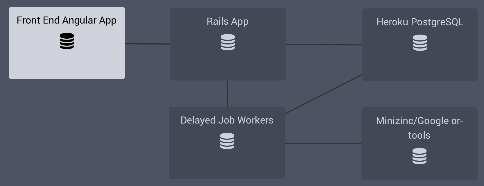
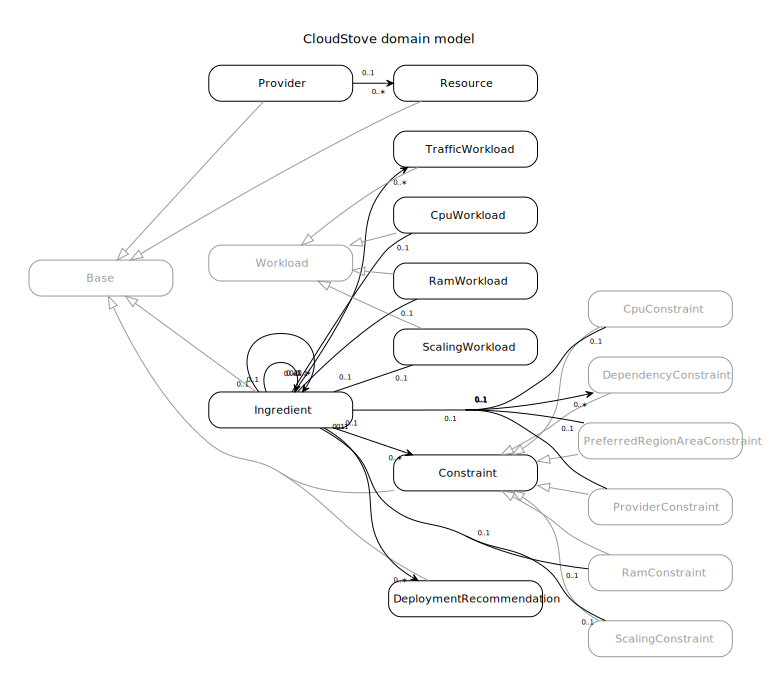
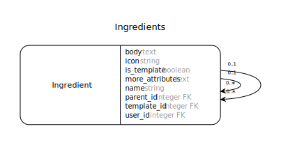
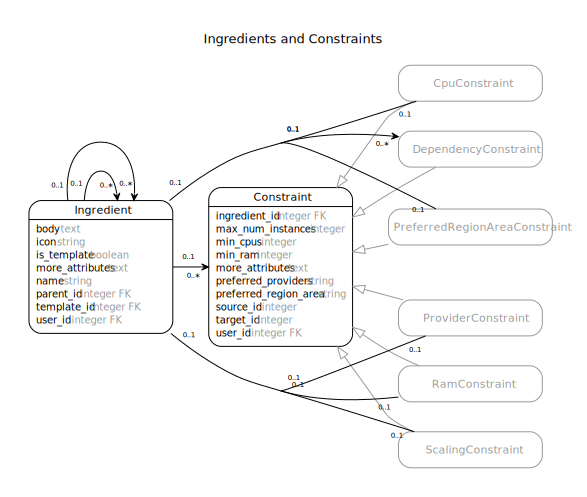
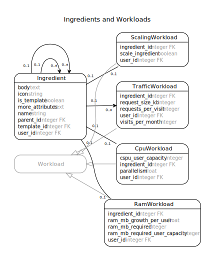
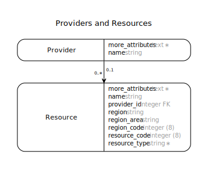
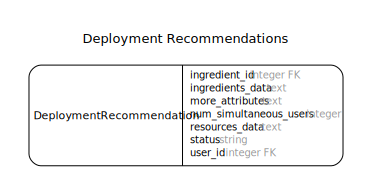

Cloud Stove Developer Guide
Architecture Overview
The Cloud Stove currently consists of two main components: The backend API implemented using Ruby on Rails and the front end application implemented using AngularJS. The figure below shows a high-level overview of the Cloud Stove components (modeled using the Cloud Stove) as currently deployed:

The backend is largely a standard Rails app with ActiveRecord RDBMS data store. Recommendations are generated by transforming the modeled applications, constraints, and available provider resources into a MiniZinc model and solving the optimal resource allocation problem using Google or-tools in asynchronously executed background jobs.
The Angular front end is implemented in TypeScript and currently exposes most features of the backend API.
Data Model
The figure below shows an overview of the Cloud Stove data model. Note that the User model was omitted from the figure to reduce clutter.

All Ingredient, DeploymentRecommendation, *Workload, and *Constraint records are owned by exactly one user. By default, a user can only see and modify entities that belong to them. There is one exception, though. Template instances (discussed below) created by an admin are visible to all users.
Base Model
If you need to store a lot of (semi-)structured metadata for an entity (that you don't need to query on), the Base model provides a more_attributes hash that will be serialized as a JSON object. For additional comfort, Base lets you define accessors for attributes stored in the serialized hash. Similar to regular attribute accessors, ma_reader, ma_writer, and ma_accessor will create attribute readers, writers, or both. Using accessors you can easily migrate attributes from the serialized hash to database columns when needed. When you add the column, you just need to go over all records and copy the new attribute values from the more_attributes hash. To use the Base model, inherit from Base and make sure that a more_attributes column of type text is part of your table.
For more information, see the documentation of Base.
Ingredients

Ingredients are at the core of the Cloud Stove data model. Application Templates, applications, and application components are modeled as hierarchical collections of ingredients. Application templates (or archetypes) and applications are at the root of ingredient trees, i.e., they have no parent (their parent_id is nil). Application components are linked to an application using parent_id. Currently, applications are flat collections of components, i.e., all components are directly assigned to one parent application. In the future, we will support reusing applications as components in other applications to create application ensembles. Templates and their components are marked by setting the is_template flag to true (The SameIsTemplateValidator ensures that ingredient hierarchies remain consistent).
Constraints

All application and component properties and interactions that will later influence deployment recommendations are modeled as constraints in the Cloud Stove. As shown in the figure above, several constraint types are currently supported:
- DependencyConstraint: Component dependencies, i.e., components that communicate with each other, can be represented using dependency constraints. These component dependencies are subsequently used in combination with traffic workloads to model expected network traffic between components of an application.
- CpuConstraint: This constraint represents the minimum amount of CPU performance required for deploying the given application component. CPU performance is currently represented as the number of required "standard" CPU cores. In the future, we will migrate towards a Cloud Stove Processing Unit (CSPU) that assesses CPU performance based on automated, periodic instance benchmarks.
- RamConstraint: Similar to the CPU constraint, this constraint represents the minimum amount of RAM required (in MB) to successfully deploy the given component in production.
- ScalingConstraint: This constraint specifies the maximum number of instances this component can be distributed across. To prevent horizontal scaling for a component, set
max_num_instancesto1, or set it to0for unlimited horizontal scaling. - PreferredRegionAreaConstraint: Deployment recommendations for applications and individual components can be constrained to certain geographical regions using this constraint. Currently, the following regions are supported: EU, US (North America), Asia-Pacific, South America. More regions will be added as providers open data centers in other regions.
- ProviderConstraint: This constraint allows you to restrict recommendations to a given set of cloud providers. The list of allowed providers is stored as a serialized array of provider ids.
Constraints are implemented as single table inheritance (STI).
Constraints are always attached to an ingredient. By default, a constraint applies only to the ingredient it is attached to. However, provider and region area constraints also apply all children of an ingredient.
Except for dependency constraints, there are not many reasons to directly create constraints for components. Usually, constraints are generated as part of a deployment scenario that is derived from modeled workloads.
Workloads

Workloads are at the core of the deployment scenario analysis in the Cloud Stove. The different types of workloads provide an abstraction from concrete component constraints and allow users to specify infrastructure requirements for application components based on the requirements of a typical user of the deployed application. Several workload types are supported:
- CpuWorkload: The required CPU performance for a component is modeled with two parameters. First, the expected number of users that can be handled with one CSPU (i.e., currently one vCPU core) is specified in
cspu_user_capacity. Additionally, the expected speedup of each additional CSPU is specified using theparallelismattribute. - RamWorkload: Component memory requirements are modeled based on three parameters. We assume that a component needs a minimum amount of RAM for basic functionality (
ram_mb_required), and that a certain number of users can be served with this base amount (ram_mb_required_user_capacity). Finally, the amount of memory required for each additional user is captured inram_mb_growth_per_user. - ScalingWorkload: With this basic scaling workload, components can be constrained to vertical scaling or allowed to horizontally scale across an arbitrary number of instances. Set
scale_ingredientaccordingly. - TrafficWorkload: Using the traffic workload, users can model the expected number and size of customer requests the application should be able to serve. The three parameters represent the size of a typical application response (
request_size_kb), the average number of customer requests per session (requests_per_visit), and the expected number of user sessions over a month (visits_per_month). We plan to use this data to generate traffic cost estimations along with deployment recommendations.
Note: The Workload base class implements common workload behavior but has no active record bindings.
Providers and Resources

To pull in available resources from providers, the Cloud Stove uses a pluggable provider updater mechanism. Provider updaters inherit from the ProviderUpdater base class. The base class will dynamically load all available provider updaters in the app/provider_updaters/ directory when ProviderUpdater.providers is called. To schedule background jobs executing all available updaters, call ProviderUpdater.update_providers.
Currently supported providers:
- Amazon EC2
- Google Compute Engine
- Microsoft Azure VMs
- Rackspace Cloud Servers
- Digital Ocean
- Joyent VMs
- Atlantic.net
Provider data update can be initiated in the provider list in the backend or using the jobs:update_providers rake task.
A provider updater is a background job that initiates fetching and parsing of provider resources in #perform. An updater is expected to maintain a Provider record with a unique name that is created upon first use and subsequently updated (not re-created). Similarly, all attached Resources should be created and updated to always reflect the current state of the provider offering. Provider and resource ids should remain stable.
Note: There is no versioning mechanism for stored provider resources. Only the current state of provider offerings should be stored. To preserve resource states when deployment recommendations are generated, recommendations store the generated MiniZinc data files on creation.
Resource and Region Codes
The following codes were introduced to reliably identify individual resources even when the resources have to updated (or regenerated) by the provider crawlers:
resource_code := deterministic_hash(resource_code, resource_name)region_code := deterministic_hash(provider_name, region_name)
Thus, a resource is identified by the composite keys: provider_name, region_name, resource_name.
Deployment Recommendations

Deployment recommendations capture resource recommendations for deploying applications (ingredient topologies). Each ingredient in an application is assumed to be deployed on a set of identical resources (cloud instances). A deployment recommendation is created for an application root instance using Ingredient#construct_recommendations, passing an array of target numbers of simulated users. In the regular request flow, deployment recommendations are created and computed using the ConstructRecommendationsJob and EvaluateRecommendationJob background jobs respectively.
When creating a new deployment recommendation, the current state of the application, along with resource specifications from the specified provider (or all providers if no provider id was specified) are transformed into MiniZinc data files. The generated data files are then used to solve the resource assignment problem using the Cloud Stove MiniZinc model in lib/horizontal-scaling.mzn. Currently, the Google or-tools optimization tool set is used to solve the optimization problem.
Using different optimizer backends
Since the Cloud Stove uses on MiniZinc to represent optimization problems, you can easily change optimization tools as long as there is a MiniZinc binding.
To use a different optimizer, you want to add the FlatZinc interpreter binaries to the vendor/minizinc/bin directory, and place the included MiniZinc library files in vendor/minizinc/share/minizinc/<interpreter-name>. For details on how to prepare a suitable MiniZinc distribution, check out the combined MiniZinc/or-tools distribution that we use for the Cloud Stove. The release script shows how to combine a basic MiniZinc distribution with a third party optimization tool.
To actually invoke another optimizer when generating recommendations, change the MiniZinc command in DeploymentRecommendation#evaluate. For instance, to generate recommendations using the included G12 optimizer, change command to:
command = "minizinc -G g12-fd #{minizinc_model} #{resources.path} #{ingredients.path}"
Extending or modifying the optimization model
As mentioned above, the Cloud Stove optimization model can be found at lib/horizontal-scaling.mzn. If you want to change or replace this model, make sure that the structure of the output statement is not changed. You can change the active optimization model by modifying the path in DeploymentRecommendation#minizinc_model. The data files necessary for performing the optimization are generated in DeploymentRecommendation#generate_resources_data and DeploymentRecommendation#generate_ingredients_data, creating MiniZinc data representations of available provider resources and the modeled application respectively. If you change the model to expect additional parameters from the application topology, you will have to make sure to generate them in DeploymentRecommendation#generate_ingredients_data.
Seed Records
To seed the database with sensible defaults, we slightly extend the Rails seeds mechanism. Since seed records for applications and application templates involve multiple dependent objects, we create complete application (and template) topologies using encapsulated seed files in db/seeds/. To add a new seed record, create a file in db/seeds/ and load it in db/seeds.rb using require_seed.
To ease the creation of idempotent seed records, we provide the ActiveRecord::Relation#seed_with! method (available only for seeds, see db/seeds.rb) that will search for a seed record using the given attributes and then yield the found (or created) record to the given block. See it in use, e.g. in db/seeds/ingredient_kanban_board.rb.
Serialization
JSON serialization of Rails models are defined in the as_json methods within the models such as:
def as_json(options={})
hash = super
hash[:id] = self.id
...
hash
end
Authentication
Backend authentication is managed using Devise Token Auth. The front end authenticates with the backend using Angular2-Token.
API
The Cloud Stove API has a (largely) RESTful API. After authenticating against /api/auth/sign_in (see Devise Token Auth documentation for details), you can access all Cloud Stove resources as described below. The reference client for the Cloud Stove API is the Cloud Stove front end AngularJS application. If in doubt, review and study API usage there.
Resources
In general, all available resources are scoped to the currently signed in user. A valid authentication token (i.e., a Authorization BEARER <token> HTTP header) must be supplied with each request.
Ingredients
GET /ingredients
Fetch all ingredients.
Parameters
- none
Response
- A list of
ingredients.
- A list of
Sample Response
[ { "id": 266, "name": "Rails Application Server", "icon": "server", "body": "The Puma application server running the Rails application.\n\n", "parent_id": 262, "created_at": "2016-12-13T13:52:58.352Z", "updated_at": "2016-12-13T13:52:58.352Z", "children": [ ], "constraints": [ { "id": 2012, "type": "DependencyConstraint", "ingredient_id": 266, "created_at": "2016-12-13T13:52:58.790Z", "updated_at": "2016-12-13T13:52:58.790Z", "target_id": 265, "source_id": 266 }, <...> ], "workloads": { "cpu_workload": { "id": 206, "cspu_user_capacity": 500, "parallelism": 0.97, "ingredient_id": 266 }, <...> } }, <...> ]
POST /ingredients
Create an ingredient
Parameters
- An
ingredientJSON object with the following structure:
{ "ingredient": { "name": "<...>", "icon": "<... (a font-awesome icon class)>", "body": "<...>", "parent_id": <nn>, "<workload>_attributes": [ <workload>, <...> ], "<constraint>_attributes": [ <constraint>, <...> ] }}- An
Response
201 createdif the resource was successfully created422 unprocessable entityif the resource could not be saved. The JSON response will contain a list of errors that prevented the resource from being saved.
GET /ingredients/:id
Fetch an ingredient
- Parameters
:id: The ID of the ingredient to fetch
- Response
- An
ingredientJSON object 404if the resource with the given ID could not be found.
- An
[PATCH|PUT] /ingredients/:id
Update an ingredient
- Parameters
- An
ingredientJSON object (see above).
- An
- Response
200 okif the resource was successfully created422 unprocessable entityif the resource could not be saved. The JSON response will contain a list of errors that prevented the resource from being saved.
DELETE /ingredients/:id
Delete an ingredient
- Parameters
:id: The ID of the ingredient to delete
- Response
204 no contentif the resource was successfully deleted404if the resource with the given ID could not be found.
GET /ingredients/:ingredient_id/copy
Copy an ingredient hierarchy starting at :ingredient_id.
- Parameters
:ingredient_id: The ID of the root ingredient of the hierarchy to copy
- Response
200 okif the ingredient was successfully copied500or422 unprocessable entityif the ingredient could not be copied
GET /ingredients/:ingredient_id/template
Convert an ingredient hierarchy into a template
- Parameters
:ingredient_id: The ID of the root ingredient
- Response
200 okif the ingredient was successfully converted into a template500or422 unprocessable entityif something went wrong
GET /ingredients/:ingredient_id/instance
Make a new instance from a template ingredient hierarchy
- Parameters
:ingredient_id: The ID of the template root ingredient
- Response
200 okif the instance hierarchy was successfully created422 unprocessable entityif something went wrong.
GET /ingredients/:ingredient_id/instances
Fetch all instances of a given template ingredient
- Parameters
:ingredient_id: The ID of the template root ingredient
- Returns
- A list of
ingredients
- A list of
Applications
GET /applications
Fetch all application defined by the current user
Parameters
- none
Response
- A list of
ingredients.
- A list of
Templates
GET /templates
Fetch all available templates
Parameters
- none
Response
- A list of
ingredients.
- A list of
Deployment Recommendations
GET /ingredients/:ingredient_id/recommendations
Fetch all recommendations for an ingredient
Parameters
:ingredient_id: The ID of the root ingredient
Response
- A list of
deployment_recommendationJSON objects
- A list of
Sample Response
[ { "id": 2149, "vm_cost": "35.00", "total_cost": 35005, "recommendation": [ { "ingredient": { "id": 256, "name": "Rails Application Server", "icon": "server", "body": "<...>", "parent_id": 252, "workloads": { "cpu_workload": { "cspu_user_capacity": 500, "parallelism": 0.97, }, "ram_workload": { "ram_mb_required": 450, "ram_mb_required_user_capacity": 150, "ram_mb_growth_per_user": 0.03, }, "scaling_workload": { "scale_ingredient": true, } } }, "resource": { "resource_code": 742746843, "resource_type": "compute", "name": "512mb", "provider": "Digital Ocean", "cores": 1.0, "mem_gb": 0.5, "price_per_hour": 0.00744, "price_per_month": 5.0, "region": "ams1", "region_area": "EU", }, "resource_count": "2" }, <...> ], "num_simultaneous_users": 1000, "application": { "id": 252, "name": "Rails Application with PostgreSQL Backend [v4]", "icon": "server", "body": "<...>", "template_id": 90, "workloads": { "cpu_workload": { "id": 233, "cspu_user_capacity": 1500, "parallelism": 0.9, "ingredient_id": 252 }, "ram_workload": { "id": 233, "ram_mb_required": 600, "ram_mb_required_user_capacity": 200, "ram_mb_growth_per_user": 0.3, "ingredient_id": 252 }, "scaling_workload": { "id": 236, "scale_ingredient": true, "ingredient_id": 252 } } }, "status": "satisfiable" }, { "id": 2148, "vm_cost": "119.26", "total_cost": 119273, "recommendation": [ { "ingredient": { "id": 256, <...> }, "resource": { "resource_code": 195426216, "resource_type": "compute", "name": "n1-highcpu-2", "provider": "Google", "cores": 2.0, "mem_gb": 1.8, "price_per_hour": 0.084, "price_per_month": 43.7472, "region": "europe", "region_area": "EU", }, "resource_count": "1" }, <...> ], "num_simultaneous_users": 1000, "application": { <...> }, "status": "satisfiable" }, <...> ]
GET /ingredients/:ingredient_id/has_recommendations
Check if recommendations exist for an ingredient
- Parameters
:ingredient_id: The ID of the root ingredient
- Response
trueif recommendations exist,falseotherwise
POST /ingredients/:ingredient_id/trigger_range
Trigger generation of multiple recommendations for an ingredient. Recommendations to be generated are specified using a range.
- Parameters
min: The minimum number of users to generate a recommendation formax: The maximum number of simulated uses to generate a deployment recommendation forstep: Generate recommendations for everystepusers betweenminandmax
- Response
job_id: The ID of the background job calculating the recommendations.
GET /ingredients/:ingredient_id/recommendations_completed
Determine if all queued jobs to generate deployment recommendations are completed.
- Parameters
:ingredient_id: The ID of the root ingredient
- Response
trueif all recommendation jobs are finished,falseotherwise
DELETE /recommendations/:recommendation_id
Delete a deployment recommendation.
- Parameters
:recommendation_id: The ID of the recommendation
- Response
200if the resource was successfully deleted404if the resource with the given ID could not be found.
DELETE /ingredients/:ingredient_id/recommendations
Delete all deployment recommendations for an ingredient.
- Parameters
:ingredient_id: The ID of the root ingredient
- Response
200if the resource was successfully deleted404if the resource with the given ID could not be found.
Workloads
CPU Workloads
GET /cpu_workloads
Fetch all stored CPU workloads.
Parameters
- none
Response
- A list of
cpu_workloads.
- A list of
Sample Response
[ { "id": 165, "cspu_user_capacity": 1500, "parallelism": 0.9, "ingredient_id": 215 }, <...> ]
POST /cpu_workloads
Create a CPU workload.
Parameters
- An
cpu_workloadJSON object with the following structure:
{ "cpu_workload": { "cspu_user_capacity": <nn>, "parallelism": <nn>, "ingredient_id": <nn>, }}- An
Response
201 createdif the resource was successfully created422 unprocessable entityif the resource could not be saved. The JSON response will contain a list of errors that prevented the resource from being saved.
GET /cpu_workloads/:id
Fetch a CPU workload.
- Parameters
:id: The ID of the resource to fetch
- Response
- A
cpu_workloadJSON object 404if the resource with the given ID could not be found.
- A
[PATCH|PUT] /cpu_workloads/:id
Update a CPU workload.
- Parameters
- A
cpu_workloadJSON object (see above).
- A
- Response
200 okif the resource was successfully created422 unprocessable entityif the resource could not be saved. The JSON response will contain a list of errors that prevented the resource from being saved.
DELETE /cpu_workloads/:id
Delete a CPU workload.
- Parameters
:id: The ID of the resource
- Response
200if the resource was successfully deleted404if the resource with the given ID could not be found.
RAM Workloads
GET /ram_workloads
Fetch all stored RAM workloads.
Parameters
- none
Response
- A list of
ram_workloads.
- A list of
Sample Response
[ { "id": 166, "ram_mb_required": 600, "ram_mb_required_user_capacity": 200, "ram_mb_growth_per_user": 0.3, "ingredient_id": 216 }, <...> ]
POST /ram_workloads
Create a RAM workload.
Parameters
- A
ram_workloadJSON object with the following structure:
{ "ram_workload": { "ram_mb_required": <nn>, "ram_mb_required_user_capacity": <nn>, "ram_mb_growth_per_user": <nn>, "ingredient_id": <nn>, }}- A
Response
201 createdif the resource was successfully created422 unprocessable entityif the resource could not be saved. The JSON response will contain a list of errors that prevented the resource from being saved.
GET /ram_workloads/:id
Fetch a RAM workload.
- Parameters
:id: The ID of the resource to fetch
- Response
- A
ram_workloadJSON object 404if the resource with the given ID could not be found.
- A
[PATCH|PUT] /ram_workloads/:id
Update a RAM workload.
- Parameters
- A
ram_workloadJSON object (see above).
- A
- Response
200 okif the resource was successfully created422 unprocessable entityif the resource could not be saved. The JSON response will contain a list of errors that prevented the resource from being saved.
DELETE /ram_workloads/:id
Delete a RAM workload.
- Parameters
:id: The ID of the resource
- Response
200if the resource was successfully deleted404if the resource with the given ID could not be found.
Traffic Workloads
GET /traffic_workloads
Fetch all stored traffic workloads.
Parameters
- none
Response
- A list of
traffic_workloads.
- A list of
POST /traffic_workloads
Create a traffic workload.
Parameters
- A
traffic_workloadJSON object with the following structure:
{ "traffic_workload": { "requests_per_visit": <nn>, "request_size_kb": <nn>, "visits_per_month": <nn>, "ingredient_id": <nn>, }}- A
Response
201 createdif the resource was successfully created422 unprocessable entityif the resource could not be saved. The JSON response will contain a list of errors that prevented the resource from being saved.
GET /traffic_workloads/:id
Fetch a traffic workload.
- Parameters
:id: The ID of the resource to fetch
- Response
- A
traffic_workloadJSON object 404if the resource with the given ID could not be found.
- A
[PATCH|PUT] /traffic_workloads/:id
Update a traffic workload.
- Parameters
- A
traffic_workloadJSON object (see above).
- A
- Response
200 okif the resource was successfully created422 unprocessable entityif the resource could not be saved. The JSON response will contain a list of errors that prevented the resource from being saved.
DELETE /traffic_workloads/:id
Delete a traffic workload.
- Parameters
:id: The ID of the resource
- Response
200if the resource was successfully deleted404if the resource with the given ID could not be found.
Scaling Workloads
GET /scaling_workloads
Fetch all stored scaling workloads.
Parameters
- none
Response
- A list of
scaling_workloads.
- A list of
Sample Response
[ { "id": 236, "scale_ingredient": true, "ingredient_id": 252 }, <...> ]
POST /scaling_workloads
Create a scaling workload.
Parameters
- A
sacling_workloadJSON object with the following structure:
{ "scaling_workload": { "scale_ingredient": <true|false>, "ingredient_id": <nn>, }}- A
Response
201 createdif the resource was successfully created422 unprocessable entityif the resource could not be saved. The JSON response will contain a list of errors that prevented the resource from being saved.
GET /scaling_workloads/:id
Fetch a scaling workload.
- Parameters
:id: The ID of the resource to fetch
- Response
- A
scaling_workloadJSON object 404if the resource with the given ID could not be found.
- A
[PATCH|PUT] /scaling_workloads/:id
Update a scaling workload.
- Parameters
- A
scaling_workloadJSON object (see above).
- A
- Response
200 okif the resource was successfully created422 unprocessable entityif the resource could not be saved. The JSON response will contain a list of errors that prevented the resource from being saved.
DELETE /scaling_workloads/:id
Delete a scaling workload.
- Parameters
:id: The ID of the resource
- Response
200if the resource was successfully deleted404if the resource with the given ID could not be found.
Constraints
GET /constraints
Fetch all stored constraints.
Parameters
- none
Response
- A list of
constraints.
- A list of
Sample Response
[ { "id": 1973, "type": "PreferredRegionAreaConstraint", "ingredient_id": 252, "preferred_region_area": "EU" }, { "id": 1974, "type": "ProviderConstraint", "ingredient_id": 252, "preferred_providers": [ "Amazon", "Google", "Digital Ocean", "Microsoft Azure" ] }, { "id": 1981, "type": "DependencyConstraint", "ingredient_id": 253, "target_id": 254, "source_id": 253 }, { "id": 2001, "type": "RamConstraint", "ingredient_id": 263, "min_ram": 504 }, { "id": 2000, "type": "CpuConstraint", "ingredient_id": 263, "min_cpus": 1 }, <...> ]
POST /constraints
Create a constraint.
Parameters
- A
constraintJSON object with the following structure: Dependency constraint:
{ "constraint": { "type": "DependencyConstraint", "source_id": <nn>, "target_id": <nn>, "ingredient_id": <nn>, }}CPU constraint:
{ "constraint": { "type": "CPUConstraint", "min_cpus": <nn>, "ingredient_id": <nn>, }}RAM constraint:
{ "constraint": { "type": "RAMConstraint", "min_ram": <nn>, "ingredient_id": <nn>, }}Provider constraint:
{ "constraint": { "type": "ProviderConstraint", "preferred_providers": [ "Amazon", "Google", <...> ], "ingredient_id": <nn>, }}Retrieve available provider names using
GET /providers/names.Preferred region constraint:
{ "constraint": { "type": "PreferredRegionAreaConstraint", "preferred_region_area": "EU", "ingredient_id": <nn>, }}Retrieve available region areas using
GET /resources_region_areas.
- A
Response
201 createdif the resource was successfully created422 unprocessable entityif the resource could not be saved. The JSON response will contain a list of errors that prevented the resource from being saved.
GET /constraints/:id
Fetch a constraint.
- Parameters
:id: The ID of the resource to fetch
- Response
- A
constraintJSON object 404if the resource with the given ID could not be found.
- A
[PATCH|PUT] /constraints/:id
Update a constraint.
- Parameters
- A
constraintJSON object (see above).
- A
- Response
200 okif the resource was successfully created422 unprocessable entityif the resource could not be saved. The JSON response will contain a list of errors that prevented the resource from being saved.
DELETE /constraints/:id
Delete a constraint.
- Parameters
:id: The ID of the resource
- Response
200if the resource was successfully deleted404if the resource with the given ID could not be found.
Providers and Resources
GET /providers/names
Fetch available cloud providers.
Parameters
- none
Response
- The list of providers that the Cloud Stove instance has pricing data for
Sample Response
[ "Microsoft Azure", "Joyent", "Rackspace", "Amazon", "Digital Ocean", "Google", "Atlantic.net" ]
GET /resources_region_areas
Fetch available region areas for deployment recommendations.
- Parameters
- none
Response
- The list of configured region areas.
Sample Response
[ "EU", "ASIA", "US", "SA" ]
GET /resources
Fetch all stored provider resources and their pricing data.
Parameters
- none
Response
- The list of resources that the Cloud Stove instance has pricing data for.
Sample Response
[ { "resource_code": 1804269842, "resource_type": "compute", "name": "16gb", "provider": "Digital Ocean", "cores": 8.0, "mem_gb": 16.0, "price_per_hour": 0.2381, "price_per_month": 160.0, "region": "tor1", "region_area": "US", "created_at": "2016-09-26T13:34:33.894Z", "updated_at": "2016-09-26T13:34:33.894Z" }, { "resource_code": 3830277681, "resource_type": "compute", "name": "m-16gb", "provider": "Digital Ocean", "cores": 2.0, "mem_gb": 16.0, "price_per_hour": 0.17857, "price_per_month": 120.0, "region": "ams2", "region_area": "EU", "created_at": "2016-09-26T13:34:33.902Z", "updated_at": "2016-09-26T13:34:33.902Z" } <...> ]
Update the figures in this guide using the following command:
rake docs:update_figures